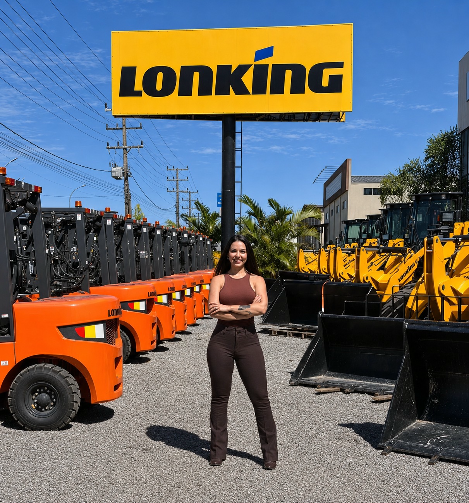
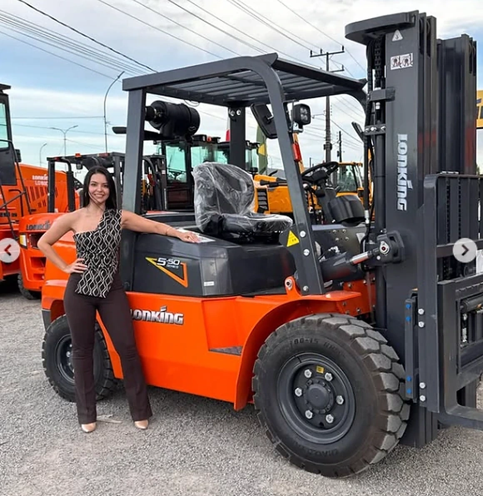
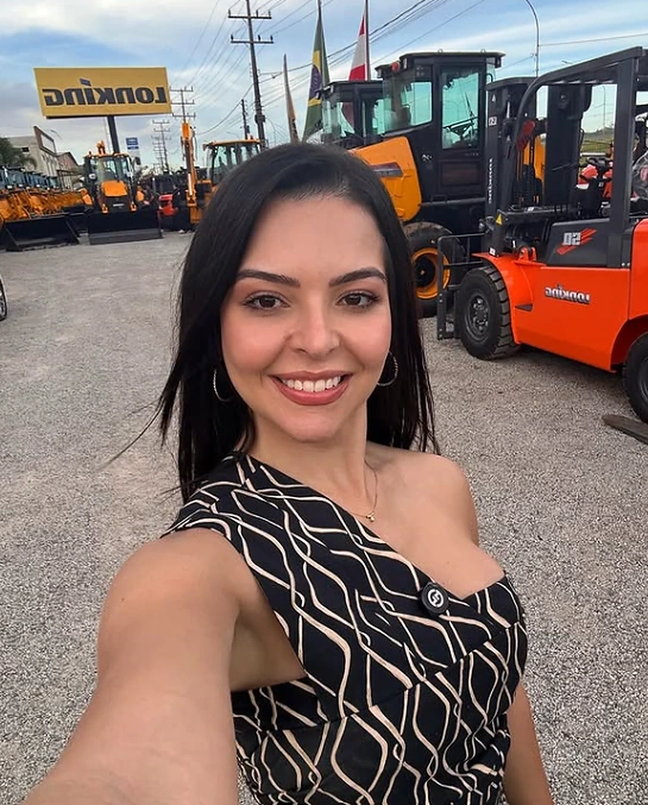

FORÇA PARA O SEU NEGÓCIO
Sua operação
tem um próximo
grande movimento.
Encontre a empilhadeira que acompanha o ritmo da sua empresa. Modelos Lonking e Hangcha, com orientação e atendimento direto de Sarah Camargo.
Experiência na escolha.
Proximidade em cada conversa.
por Sarah Camargo
autorizada
com a Sarah.
MOVIMENTE NOVAS POSSIBILIDADES
Uma boa escolha
começa com uma
boa conversa.
Cada operação tem seu peso, seu espaço e seu ritmo. A escolha da empilhadeira começa por entender como ela vai trabalhar no seu dia a dia.
Aqui, você pode conhecer as máquinas, conferir os detalhes de cada modelo e conversar com a Sarah para avaliar o que faz sentido para a sua empresa.
Conheça quem está ao seu ladoENCONTRE SUA EMPILHADEIRA
Potência para
seguir em frente.
Compare os modelos por marca, capacidade e alimentação. Abra a ficha de cada máquina para ver fotos, especificações e condições comerciais.
Ainda em dúvida sobre qual modelo escolher?
Conte sua necessidade para a SarahMARCAS REPRESENTADAS
Duas marcas.
Atendimento com nome e rosto.

A máquina certa começapela sua necessidade.
ESCOLHA COM MAIS CLAREZA
Antes de escolher,
vamos entender
sua operação.
Três informações ajudam a iniciar essa conversa.
O que você precisa movimentar?
Conte o peso e as características da carga que faz parte da sua rotina.
Até onde precisa elevar?
Informe a altura de trabalho e como os materiais serão armazenados.
Onde a máquina vai trabalhar?
Descreva o ambiente, o piso, o espaço disponível e a frequência de uso.

QUEM É SARAH
Por trás de cada
máquina, uma
conversa comigo.
Sou Sarah Camargo, representante comercial autorizada Lonking e Hangcha. Já realizei mais de 300 vendas de máquinas e acompanho de perto as necessidades de quem busca uma empilhadeira.
Quando você entra em contato, sou eu quem atende. Quero conhecer sua operação, apresentar os detalhes dos modelos e ajudar você a avaliar a próxima aquisição da sua empresa.
Sarah CamargoRepresentante comercial
Falar com a SarahHISTÓRIAS QUE SEGUEM EM MOVIMENTO
Mais de 300
máquinas vendidas.
Cada entrega faz parte da minha trajetória. Conheça alguns registros das máquinas que chegaram para fazer parte da rotina de outras empresas.
VAMOS CONVERSAR?
Da primeira dúvida
ao próximo passo.
Algumas informações para começar.
Como saber qual empilhadeira escolher?
Comece pelo peso da carga, altura de elevação e ambiente de trabalho. Envie essas informações para a Sarah e converse sobre os modelos do catálogo.
Onde encontro as especificações?
Abra “Ver detalhes” no modelo desejado. A página reúne fotos, capacidade, alimentação e as especificações disponíveis para aquela máquina.
Como consultar valores e disponibilidade?
Use “Consultar este modelo” na página da máquina para preparar uma mensagem com o modelo escolhido. A Sarah confirma o valor, a disponibilidade e as condições da proposta.
Posso conversar antes de decidir?
Sim. Você pode falar com a Sarah mesmo sem ter escolhido um modelo. Conte como a máquina será utilizada para iniciar o atendimento.
O PRÓXIMO MOVIMENTO É SEU
Vamos encontrar
a máquina para
o seu negócio?
Conte o que sua operação precisa. A Sarah ajuda você a conhecer as opções e dar o próximo passo.
Falar com a Sarah Ou acompanhe pelo Instagram